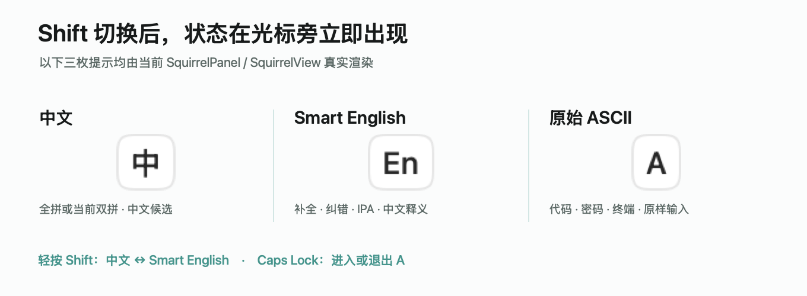

中文句子，容得下 English。
全拼与七种双拼，共享词库与学习数据。句子里直接敲英文整词，中途不必上屏；遇到歧义，再选你想要的词。
全拼 / 自然码 / 小鹤 / 更多双拼
为 macOS 而作的双语输入法
写中文，夹一句 English，接着写。
一个输入源，让两种语言自然相遇。
词库与模型，都在你的 Mac 上。
随手记下，正在发生的灵感。
把想法连起来，
也把两种语言连起来。
聊聊跨region的migration
A little space.
A clearer thought.
Somewhere in the cloud
写代码的时候，
每个字符，保持原样。
代码、路径、命令。
直接交给当前应用。
输入状态示意 · 点击切换
01中英文，共用一个输入源
02日常输入，离线完成
03为你熟悉的 macOS 而作
顺着思路，继续写
中文、Smart English、原始 ASCII。
常用的三种状态，在同一个输入源里各就各位。
全拼与七种双拼，共享词库与学习数据。句子里直接敲英文整词，中途不必上屏；遇到歧义，再选你想要的词。
英文补全、拼写纠错，配合音标与中文释义。只记得中文意思？用拼音反查英文，让表达接得上。
轻按 Shift，往返中文与 Smart English。Caps Lock 进入原始 ASCII，代码、终端命令直接交给应用。
中文模式输入 |suanfa，不用离开中文状态。

候选、音标与中文释义，在同一处看清。
真实产品渲染 · 宣纸主题 查看原图

好用，也要合眼缘
七套主题，各有浅色与深色。
横排、竖排、字体与候选数量，
调成你习惯的模样。

七套主题 · Light / Dark 查看完整主题原图
本地优先
输入、词库与语言模型都在本机运行。无需账号，没有遥测；需要在 Mac 之间接续习惯时，可以选择用 iCloud 同步学习词。
了解隐私与数据自定义词、学习记录与 Text Expander，让专有名词、常用短语和固定文本有自己的位置。
Core 与语言数据分开更新。已有用户可在 Settings 内应用 Core 更新，复用词库与模型，无需注销。
从本项目 GitHub Release 获取 Linnet.pkg。社区版未获 Apple Developer ID 签名或公证；若被系统拦截，按安装指南手动确认信任。
安装成功后，保存工作，注销并重新登录一次，让 macOS 完成首次登记。后续设置内 Core 更新无需注销。
在系统设置 → 键盘 → 文本输入中添加或启用 Linnet，按提示允许，再从菜单栏输入菜单选中它。
在下载目录执行以下命令，将结果与同一 Release 提供的 SHA-256 比较。
shasum -a 256 Linnet.pkg